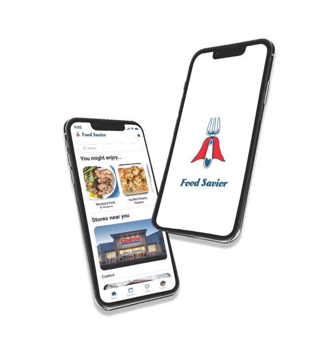
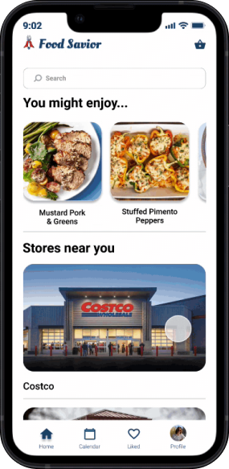
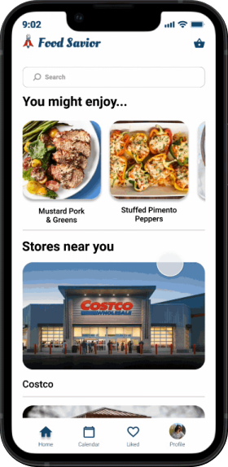
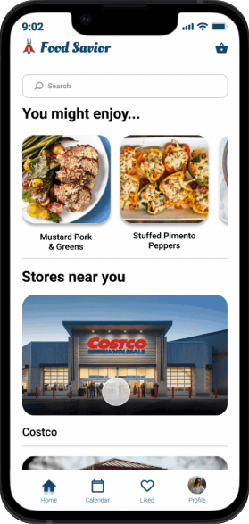
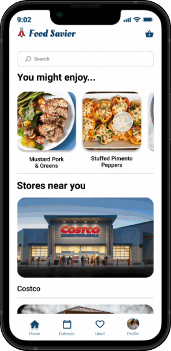
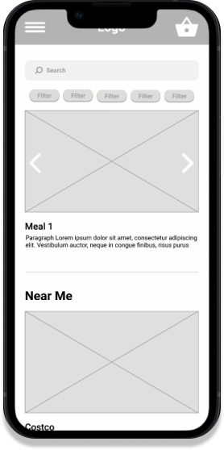
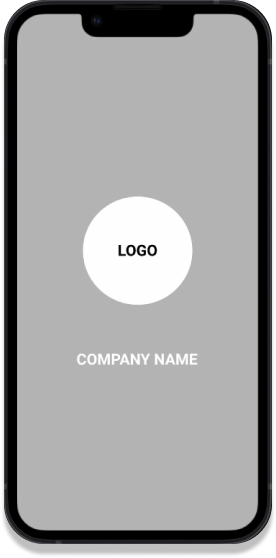
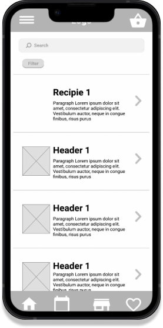
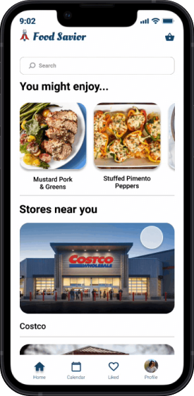

“
”
“
”

Work
Home
About
Food Savior
DURATION: August 2021 - December 2021
TOOLS USED: Figma and Illustrator
PROJECT INFO: Final project: University of Colorado Boulder
Team of one
Team of one
ROLE: UX Design & UX Research
DESIGN: Lo-fi wireframes, conceptual development to mid-fi screens, refined features for the hi-fi prototype, and
interaction design of the high-fi prototype.
RESEARCH: conducted interviews, led recruitment of survey participants, and conducted evaluative survey.
The Problem
Research Methods Used
1 on 1 Interviews
Affinity Mapping
Competition Analysis
Relevant Findings
1 on 1 Interviews
Affinity Mapping
Competition Analysis
My Solution
The Challenge: Why People Throw Out Food
Just like everyone else, I have a hard time mitigating my food waste. I find myself throwing food for many
different reasons. I sought to reduce food waste, support local businesses, and make grocery shopping easy and
fun!
My solution was an all-in-one app that optimizes a users’ grocery buying experience by connecting the amount of food purchased to the amount/type of meals eaten in a month’s span by the user. By minimizing users’ purchased food to the exact amount of food that is required for a meal, excess food
waste is eliminated.
(7 User Interviews)
My interviews included a series of questions regarding their...
Experience when buying food
Food purchasing habits
Common things they look for when buying food
Habits for preserving food
Habits for reducing their food waste
Amount of food wasted per week
My interviews included a series of questions regarding their...
Experience when buying food
Food purchasing habits
Common things they look for when buying food
Habits for preserving food
Habits for reducing their food waste
Amount of food wasted per week
I categorized the qualitative data from my interviews into an affinity map to make sense of the data. It
amounted to ~100 post it notes worth of data!
Problem Statement
User Flow Diagram
Feature Prioritization
Store Specific Recipes
Already Have It?
Login
Homepage
Search and Recipes
I looked at other reducing food waste apps that currently exist in the market. These included...
2 Good to Go - An app that allows restaurants to sell food that they would otherwise throw out to users at a reduced price.
OLIO - A community based app which connects users and local businesses so that surplus food can be shared and not thrown away.
Flash Food - An app that allows local grocery stores to sell food that is about to go bad at a reduced price.
2 Good to Go - An app that allows restaurants to sell food that they would otherwise throw out to users at a reduced price.
OLIO - A community based app which connects users and local businesses so that surplus food can be shared and not thrown away.
Flash Food - An app that allows local grocery stores to sell food that is about to go bad at a reduced price.
People actively try to reduce food waste
The people I interviewed actively try to come up with ways to reduce their own food waste for reasons like: money, sustainable causes, and to reduce bad smells in their fridge. They do this by buying foods with longer shelf life, freezing meats, buying processed foods, getting frozen fruits and vegetables, and making frequent trips to the grocery store.
The people I interviewed actively try to come up with ways to reduce their own food waste for reasons like: money, sustainable causes, and to reduce bad smells in their fridge. They do this by buying foods with longer shelf life, freezing meats, buying processed foods, getting frozen fruits and vegetables, and making frequent trips to the grocery store.
Grocery shopping is a chore
For most people, grocery shopping is the last thing they want to do. This causes people to not give much thought on how this is an important part of reducing food waste.
For most people, grocery shopping is the last thing they want to do. This causes people to not give much thought on how this is an important part of reducing food waste.
Even when there’s planned meals, food goes to waste
Even when people would shop for pre-planned recipes, a lot of food would still go to waste. This is because they buy too much of an ingredient, wait too long to make the recipe, make just too much food, or will let leftovers sit in the fridge until they go bad.
Even when people would shop for pre-planned recipes, a lot of food would still go to waste. This is because they buy too much of an ingredient, wait too long to make the recipe, make just too much food, or will let leftovers sit in the fridge until they go bad.
Goal: To get a detailed understanding of their painpoints and habits when shopping and saving food.
Outcome: I concluded that although these apps were helping reduce the amount of food waste by grocery stores and
restaurants, they usually did not follow through to reducing food waste once it was in the hands of individual
users.
Good Intentions Go Bad
Americans are conditioned to seek out the freshest, most nutritious food. Armed with the intent to feed ourselves and our families only the best, we fill our carts with good food that we believe we are going to eat. However, life happens and sometimes our fresh and nutritious foods go into the trash.
Americans are conditioned to seek out the freshest, most nutritious food. Armed with the intent to feed ourselves and our families only the best, we fill our carts with good food that we believe we are going to eat. However, life happens and sometimes our fresh and nutritious foods go into the trash.
Lack of Self Awareness
“I don’t throw out that much food” is a common phrase for most Americans when actually they just are unaware of their habits.
“I don’t throw out that much food” is a common phrase for most Americans when actually they just are unaware of their habits.
We Don’t Know Much About Food Safety
We would rather be safe than sorry and people think older food and food that’s past its date will make them sick, when in reality those dates refer to quality, not safety.
We would rather be safe than sorry and people think older food and food that’s past its date will make them sick, when in reality those dates refer to quality, not safety.
Overview
Research
The average American household
wasted 31.9% of its food.
wasted 31.9% of its food.
Estimating Food Waste
as Household Production Inefficiency (2020)
Yu, Y. and Jaenicke
as Household Production Inefficiency (2020)
Yu, Y. and Jaenicke
01.
02.
03.
Project Timeline
01
02
03
04
Empathize and Define
Defining project goal
Project Timeline
Defining project goal
Project Timeline
Research
User Interviews
Affinity Mapping
Competitive Analysis
User Interviews
Affinity Mapping
Competitive Analysis
Design and Prototype
Problem Statement
User Flow
Feature Prioritization
Lo-Fi Wireframes
Mid-Fi Wireframes
Hi-Fi Wireframes
High-Fi Wireframes
Problem Statement
User Flow
Feature Prioritization
Lo-Fi Wireframes
Mid-Fi Wireframes
Hi-Fi Wireframes
High-Fi Wireframes
Evaluate
User Feedback
Presentation
Reflection
Future Plans
User Feedback
Presentation
Reflection
Future Plans

”
“
Grocery shopping is a pain in the ass!
”
“
I throw out about 30%-40% of all my food
”
“
I probably most commonly throw out bad salad
How might we support local businesses while reducing food waste commercially and at home?
Say Hi!
tlo7700@gmail.com
ADDRESS
Design
People need a more efficient way to buy food because the current food shopping experience is leading to food
waste.

To grasp a better understanding of the scope of this project, I identified three distinct sections of my app:
Login/New User, Home Page, and Checkout Page. I found that planning out the task flow early on helped me make
more strategic design decisions as I could identify opportunity areas and ask users to perform a specific task
during user testing sessions.
After developing the basic user flow for the main user stories, I went to ideate the key features and the
interactions a user takes. Below is a quick demo of the 3 main features.

Calendar
The calendar feature allows for users to track their meals throughout the month. It also keeps track of when each ingredient is ordered and how long they will stay fresh.
Through my interviews I found that some people prefer quality over cost. By allowing for customers to pick which local stores they wish to support, they can change this directly. In addition, they can pick specific ingredients and can choose from common recipes that use this
ingredient.
No worries, this feature allows users to take off ingredients that they already have!
Making sure that you only purchase what you need and reducing more food waste!
Here are some other key features I added as I continued to develop my final design.



Mid-Fidelity Wireframes



I first started with some low-fi wireframes and then moved onto mid-fidelity wireframes. Here I wanted to
really develop the flow of the app and not focus on its design. I also targeted pain points that my app had.
Final Design
Other Key Features
The liked page keeps track of the users’ favorite recipes in one area. Users can then come back and reorder
their favorite recipes.
Liked Page
By clicking this button, it allows for users to prolong the length of ingredients in the app.
In the Freezer
The profile tab allows for users to look at their past orders, change their settings, look at data on their eating habits, recruit a friend for coupons and
savings, track orders, change payment type, and affect notifications. In addition, users can edit their profile and personalize the app.
Profile
After a user is ready to checkout, they can choose either to pickup their groceries at the store or to have a
food savior representative pickup their groceries and deliver them.
Delivery & Pickup
For my user testing plan, I asked a few users to do some simple tasks like navigate through the different tabs
and add a recipe to the cart. This was extremely helpful at determining what my app’s pain points are.
User Testing Plan
My results were better than expected! For the most part, it seemed like my app was pretty intuititve. There
were little changes like adding text to navigation bar to make it less confusing and changing the size of
some of the buttons to be more user friendly. Some of the best feedback was different features like the In The Freezer and the Insight tab
that shows you stats on your food eating habits in the profile tab.
Results and Feedback
This was my first experience with the UX Design process and I enjoyed it thoroughly. I definitely
underestimated how much work goes into creating apps. As I began to build out the final design I found myself
wanting to learn more and make it as polished as possible. Although my app is currently lacking a lot of
aspects, I think that it was a good representation on what the possibilites are with this app.
Conclusion
In the future I want to spend more time on the research and design phases. I put a lot of work into the
backend of the project and I think I could have made a more polished product by spending more time with
interviews and getting more feedback on my design.
Future
For Full Prototype
Click Here
🔑

Reflection